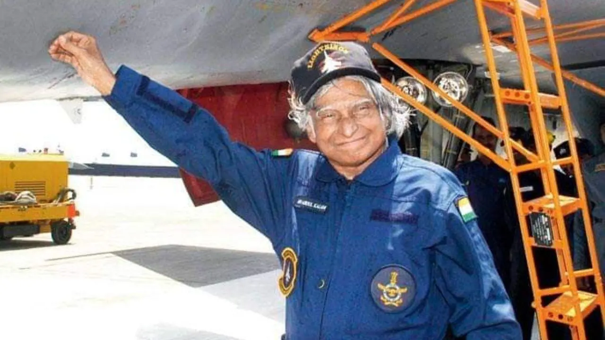
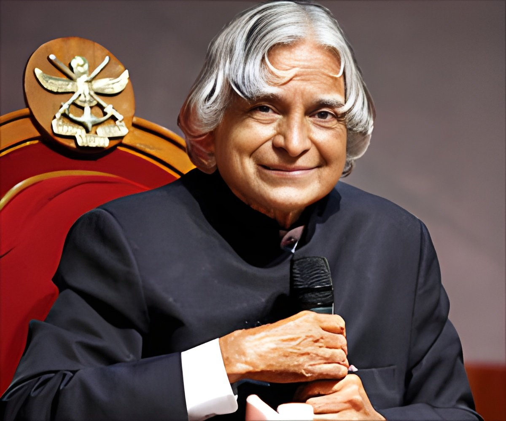

In the annals of Indian history, Dr. APJ Abdul Kalam shines as a luminary figure, not only as the 11th President of India but also as a brilliant scientist whose contributions to the fields of science and space exploration remain unparalleled. Recognized for his exceptional achievements, he was bestowed with the esteemed Bharat Ratna award, an honor reserved for the nation's most distinguished individuals.

A visionary and a pioneer, Dr. APJ Abdul Kalam played a pivotal role in propelling India's missile technology to remarkable heights. He was a key architect behind the development of the Agni and Prithvi ballistic missiles.Moreover, his crowning achievement came in the form of the SLV-III, India's maiden indigenous satellite launch vehicle, marking a significant milestone in the country's space exploration endeavors.
As we remember the extraordinary life of this visionary leader and extraordinary scientist, his teachings and ideals continue guiding the nation towards progress and innovation. Dr. Kalam's legacy lives on, inspiring generations to dream big and embrace knowledge to transform their visions into reality.The world recognized his invaluable contributions by bestowing upon him the prestigious title of "Missile Man of India."
